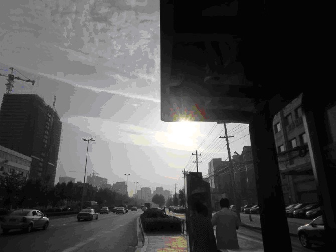
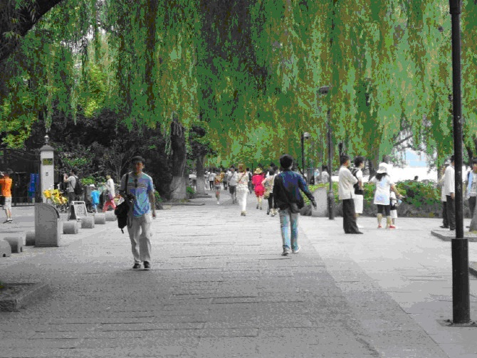
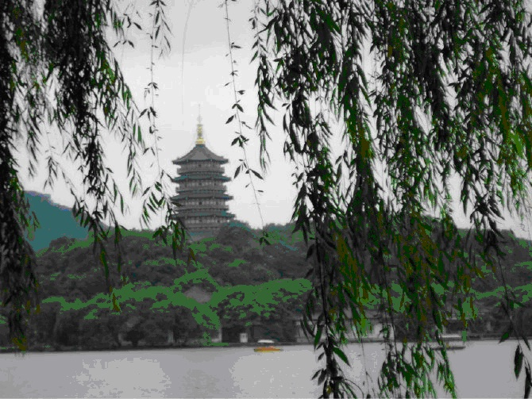

《杭州西湖&桐乡乌镇》五月，一场乘着火车的旅行
一直叫嚣着说要来场长途旅行，也曾幻想着自己一人背着背包、拿着单反，来一场说走就走的旅行，可总是没有勇气独自启程。这次蹭着端午假期再加上还剩的年假，在成功蛊惑闺蜜后，两人总算是出行成功了。虽说前后来回是有五天时间，因为考虑成本问题的因素，这次基本是火车加动车加汽车加行路组合，所以真正玩的时间其实就只有两天，剩下的三天要么就是在火车、动车上、要么就是在汽车上过的，回头看时确实不太值得效仿，坐车累不说，剩下的那点时间根本没啥精力去玩，或说根本就玩不尽兴。
杭州初印象
 清晨的杭州，还正在睡梦中，给人的一种很安静、祥和的心情。好天气哇，就连坐了一晚夜车的我们被这种天气所感染，疲惫之神也被一扫而光了。（原谅我的卡片机像素不高，都将就着看吧）
放下行李，稍作休整，出发咯。从杨家村乘坐135到闸弄口转乘地铁1号线在龙翔桥站下车，C4出口向右沿平海路往前直走至西湖。到了西湖至于向左走还是向右走，就看自个咯。
我们的西湖路线：
柳浪闻莺-雷峰夕照（路过）-花港观鱼-三潭印月-苏堤-苏小小墓-西泠桥边-后孤山旁-平湖秋月-白堤-断桥残雪我们是向左走的，柳浪闻莺其实路很长，以至于我们一度认为自己是不是走错了怎么还没看到任何景点。 
柳浪闻莺
走了也不知道有多久的路，终于见到了我们的第二个景点，雷峰夕照，不过上去是要门票的哦。商量了下决定不上去了，累是其中原因之一，二是此雷峰塔早已经不是彼雷峰塔了，早前塔下压着的白娘子早就飞走啦~ 雷锋塔
终于见到了一元纸币上的三潭印月了，各种激动。我们坐的是手摇摆渡船去的，每人30元，如果包船的话是180元，时间大约是在半个小时左右。普及下知识，一元纸币背面的图像其实不止有三潭印月、还有苏堤、白堤、雷锋塔等，是好几个景点综合的效果图滴。如果你认为这三座葫芦形的石塔只是作为景点供人观赏拍照之用的那就错了，之所以把它们建在西湖中是为了测试西湖的水位线的。看到下面图中的小塔了么，是不是看着有点斜斜的？你想的没错，这个小塔是后来修补的，听摇船的本地小哥讲，有一年这塔被马力十足的游艇给撞倒了，之后游艇公司赔了三百多万，听了不觉得咂舌，好贵的小塔哪……旅行感悟
这次的出行本来以为杭州西湖会很出彩，可是错了，在西湖柳浪闻莺的行道上那番“我一定要把西湖描绘要有多姿多彩就有多姿多彩，把那些想法还停留在来与不来杭州的小伙伴们全都给蛊过来，让TA们也尝尝这从期待到失望的滋味”话还是不忍说出，好吧，杭州西湖真的叫人好生失望，也不知道是不是来的季节不对的原因，还是真如别人所说，反正觉着杭州西湖还是存在心底的好。可饶是心里已经对它抱有不太大的幻想了，还是把西湖绕了个大概。倒是因为杭州跟桐乡距离很近，所以拐了个道随便去逛逛所谓的枕水之乡乌镇反而成了这趟旅行的最大亮点，还好有它，补差了一下心里的落差感…人们常说，旅行最大的意义在于看了不同的风景跟不同的人，在我看来旅行最大的意义在于看风景的心情，没个好心情饶是在好的风景，在好的人你也会觉得枯燥乏味的，所以，旅行，请带着个好心情出发吧。